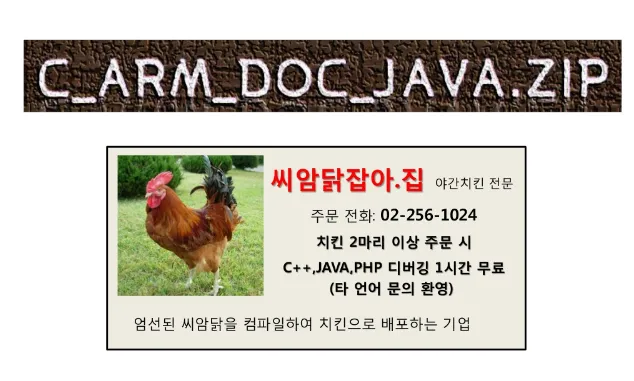
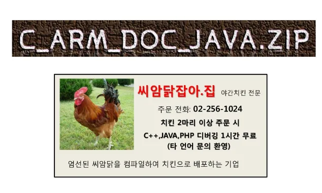
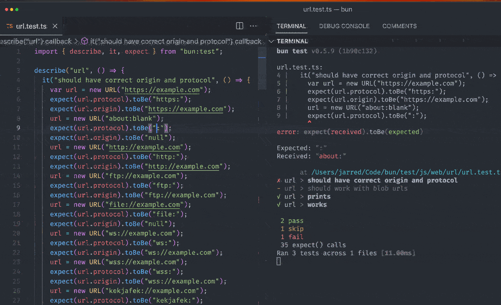

Bun
gseok.seo@gmail.com
March 09, 2024
March 09, 2024
들어가기 전에…!
cpp(1983)가 나왔을때
나는 갈아탓다.
c(1972)보다 좋다고 생각했기 때문이다.
그다음 java(1996-01)가 나왔을때
나는 갈아탓다.
cpp보다 편했기 때문이다.
그다음 javascript(1996-08)가 뜨고 있을때
나는 갈아탓다.
이거다 싶었다.
bun(2023-09-08)이 출시되었다.
나는 갈아타야하는가?
각을 보자...!
들어가기 전에…!
잘못하면, 최종 테크트리가 너무 빨리 올지도 모른다... 

Bun?

Bun?
출처: https://bun.sh/Bun?

Wow!
Why Wow?
Bun? - Wow?

Bun? - Wow?

Bun? - Wow?

Bun외 - 번외
web(javascript)에서 빌드란 무었일까?
번들링은? 런타임은? 패키지 매니저는?

Bun Goal
Speed(4x faster than Node.js)
TypeScript & JSX support
ESM & CommonJS compatibility
Web-standard APIs
Node.js compatibility
Bun Goal
The long-term goal is to be a cohesive, infrastructural toolkit for building apps with JavaScript/TypeScript
Bun - runtime
Javascript Runtime 출처: https://www.ecreativeworks.com/blog/site-different-browsers
출처: https://www.ecreativeworks.com/blog/site-different-browsers
 출처: https://codesphere.com/articles/bun-the-new-javascript-runtime-competing-with-deno-and-node
출처: https://codesphere.com/articles/bun-the-new-javascript-runtime-competing-with-deno-and-node
Bun - runtime
Javascript Engine
 출처: https://dev.to/mihirverma7781/inside-javascript-engine-373
출처: https://dev.to/mihirverma7781/inside-javascript-engine-373
Bun - runtime

Bun - runtime - node.js compatibility
 출처: https://bun.sh/blog/bun-v1.0#node-js-compatibility
Full-stack applications built with Next.js, Remix, Nuxt, Astro, SvelteKit, Nest, SolidStart, and Vite work in Bun.
출처: https://bun.sh/blog/bun-v1.0#node-js-compatibility
Full-stack applications built with Next.js, Remix, Nuxt, Astro, SvelteKit, Nest, SolidStart, and Vite work in Bun.
Bun - runtime - speed
 출처: https://bun.sh/blog/bun-v1.0#speed
starting up to 4x faster than Node.js
출처: https://bun.sh/blog/bun-v1.0#speed
starting up to 4x faster than Node.js
Bun - runtime - Bun APIs
 출처: https://bun.sh/docs/runtime/bun-apis
출처: https://bun.sh/docs/runtime/bun-apis
Bun - runtime - Web APIs
 출처: https://bun.sh/docs/runtime/web-apis
출처: https://bun.sh/docs/runtime/web-apis
Bun - runtime - Watch Mode
 출처: https://bun.sh/docs/runtime/hot
$ bun --watch test
Bun - package manager
Javascript Package manager 출처: https://blog.logrocket.com/javascript-package-managers-compared
출처: https://blog.logrocket.com/javascript-package-managers-compared
npm 느리다! yarn 도 느리다! pnpm 어? 쓸만한데?
Bun - package manager
 출처: https://bun.sh/blog/bun-v1.0#bun-is-a-package-manager
출처: https://bun.sh/blog/bun-v1.0#bun-is-a-package-manager
$ bun install
$ bun add [--dev|--production|--peer]
$ bun remove
$ bun update
Bun - package manager - install speeds
 출처: https://bun.sh/blog/bun-v1.0#install-speeds
출처: https://bun.sh/blog/bun-v1.0#install-speeds
Bun - package manager - install speeds
 출처: https://bun.sh/docs/cli/install
출처: https://bun.sh/docs/cli/install
Bun - package manager - running scripts


Bun - package manager - running scripts
 출처: https://bun.sh/blog/bun-v1.0#running-scripts
출처: https://bun.sh/blog/bun-v1.0#running-scripts
Bun - bundler
Bundler?
출처: https://snipcart.com/blog/javascript-module-bundler
Bun - bundler
Not bundle 출처: https://snipcart.com/blog/javascript-module-bundler
출처: https://snipcart.com/blog/javascript-module-bundler
Bun - bundler
bundle 출처: https://snipcart.com/blog/javascript-module-bundler
출처: https://snipcart.com/blog/javascript-module-bundler
Bun - bundler

Bun - bundler

Bun - bundler
$ bun build ./index.tsx --outdir ./build
await Bun.build({
entrypoints: ['./index.tsx'],
outdir: './out',
minify: {
whitespace: true,
identifiers: true,
syntax: true,
},
})
Bun - bundler - speed
 출처: https://bun.sh/docs/bundler, three.js benchmark
출처: https://bun.sh/docs/bundler, three.js benchmark
Bun - bundler - plugin
import type { BunPlugin } from "bun";
const myPlugin: BunPlugin = {
name: "my-plugin",
setup(builder) {
builder.onResolve({ /* onResolve.options */ }, args => {
return {
/* onResolve.results */
};
},
);
builder.onLoad({ /* onLoad.options */ }, args => {
return {
/* onLoad.results */
};
},
);
},
};
Bun - test runner
Web의 test runner
 출처: https://2021.stateofjs.com/en-US/libraries/testing/
출처: https://2021.stateofjs.com/en-US/libraries/testing/
Bun - test runner
Web의 test runner
 출처: https://raygun.com/blog/javascript-unit-testing-frameworks/
출처: https://raygun.com/blog/javascript-unit-testing-frameworks/
Bun - Test runner
/* Bun has a built-in testing module bun:test that is fully Jest-compatible. */
import { test, expect, mock } from "bun:test";
const random = mock(() => Math.random());
test("random", () => {
const val = random();
expect(val).toBeGreaterThan(0);
expect(random).toHaveBeenCalled();
expect(random).toHaveBeenCalledTimes(1);
});
$ bun test
Bun - Test runner - speed
 출처: https://bun.sh/blog/bun-v1.0#bun-is-a-test-runner
출처: https://bun.sh/blog/bun-v1.0#bun-is-a-test-runner
Bun - Test runner - speed
 출처: https://bun.sh/docs/cli/test
출처: https://bun.sh/docs/cli/test
Bun - Test runner - git action
출처: https://bun.sh/blog/bun-v1.0#bun-is-a-test-runner

Bun - package runner
package runner?
 출처: https://stackoverflow.com/questions/50605219/difference-between-npx-and-npm
출처: https://stackoverflow.com/questions/50605219/difference-between-npx-and-npm
Bun - package runner
package runner?
// package.json
{
"name": "whatever",
"version": "1.0.0",
"scripts": {
"some-package": "some-package"
}
}
$ npm run some-package
$ npx create-react-app my-app
Bun - package runner
package runner?
 출처: https://medium.com/@maybekatz/introducing-npx-an-npm-package-runner-55f7d4bd282b
출처: https://medium.com/@maybekatz/introducing-npx-an-npm-package-runner-55f7d4bd282b
Bun - package runner
{
// ... other fields
"name": "my-cli",
"bin": {
"my-cli": "dist/index.js"
}
}
$ bunx my-cli
Bun - etc - window
 출처: https://bun.sh/blog/bun-v1.0#bun-more-thing
출처: https://bun.sh/blog/bun-v1.0#bun-more-thing
Bun - etc - license
 출처: https://bun.sh/docs/project/licensing
출처: https://bun.sh/docs/project/licensing
Bun - etc - polyfills
 출처: https://bun.sh/docs/project/licensing#polyfills
출처: https://bun.sh/docs/project/licensing#polyfills
Bun - etc - release
최신버전 - v1.0.30 (2024.03.07기준)
 출처: https://bun.sh/blog/bun-v1.0.30
출처: https://bun.sh/blog/bun-v1.0.30
Bun - etc - release
매우 active 한 프로젝트이다.!!!
 출처: https://bun.sh/blog
출처: https://bun.sh/blog
Bun - etc - doc
매우 문서화가 잘되어 있는 편이다.!!!
 출처: https://bun.sh/guides
출처: https://bun.sh/guides
Bun - 결론